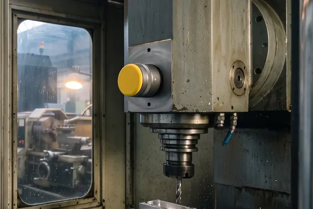
Roulement ou broche : lire une courbe en 5 minutes
6 min de lecture

Des capteurs de vibration pour les usines de 50 à 300 salariés, posés sans arrêter la production.
Aluminium anodisé, Ø 45 mm, étanche IP67.
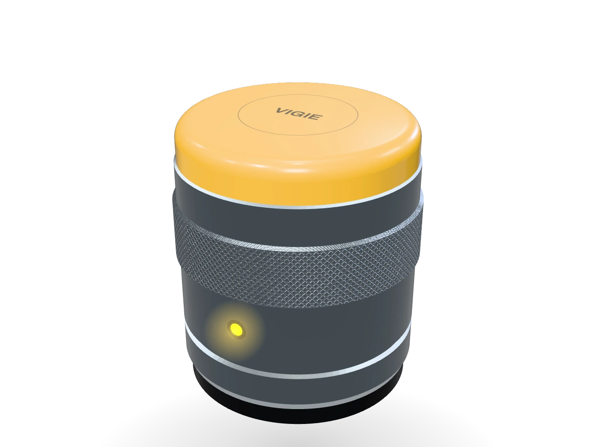
Aimanté sur le palier, machine en marche.
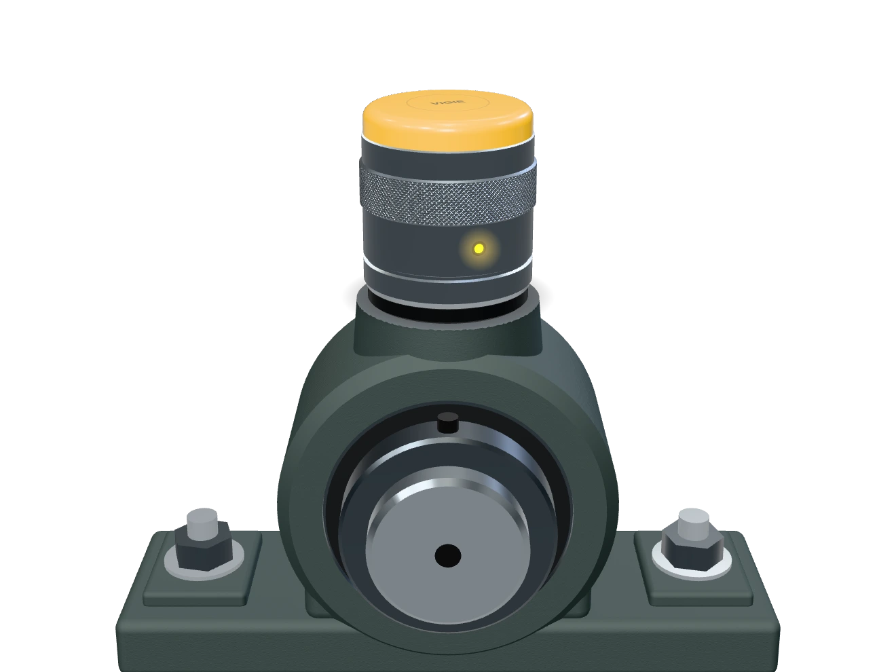
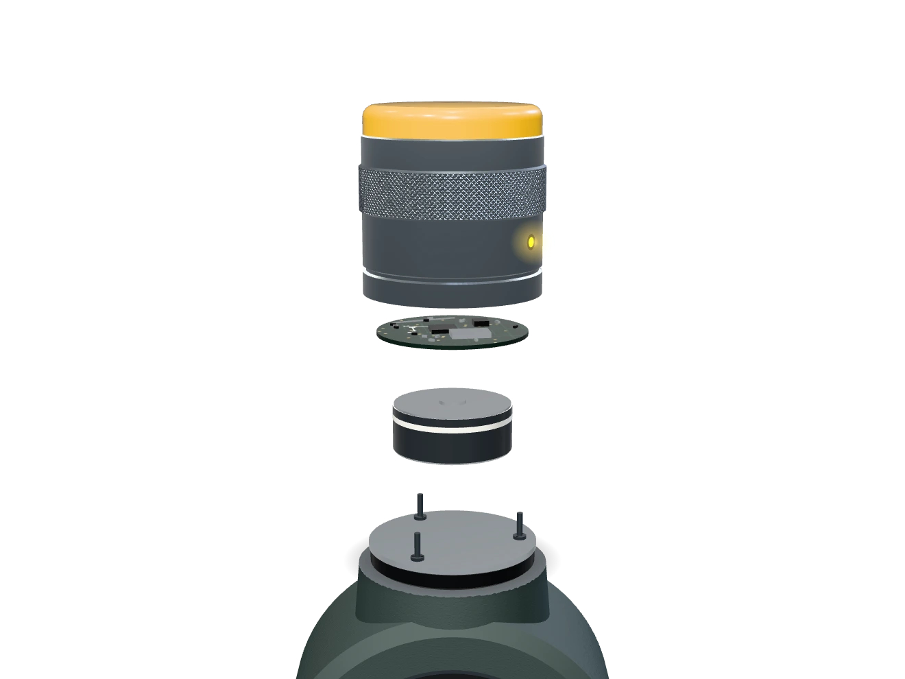
Une salve de 25 600 mesures par seconde.
Seuil 4,5 mm/s
4,6 mm/s
Casse probable
S-8
aujourd'hui
S+3
3 semaines
Messagesmaintenant
VIGIE
CN-04, roulement avant de broche : 4,6 mm/s, seuil 4,5. Casse probable sous 3 semaines. Julien vous appelle à 8 h.


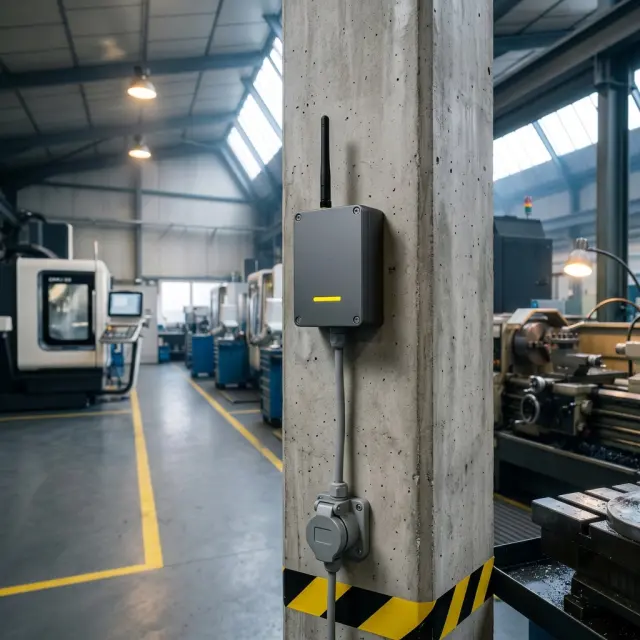


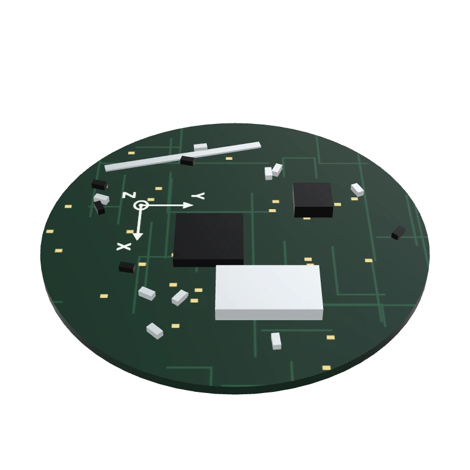
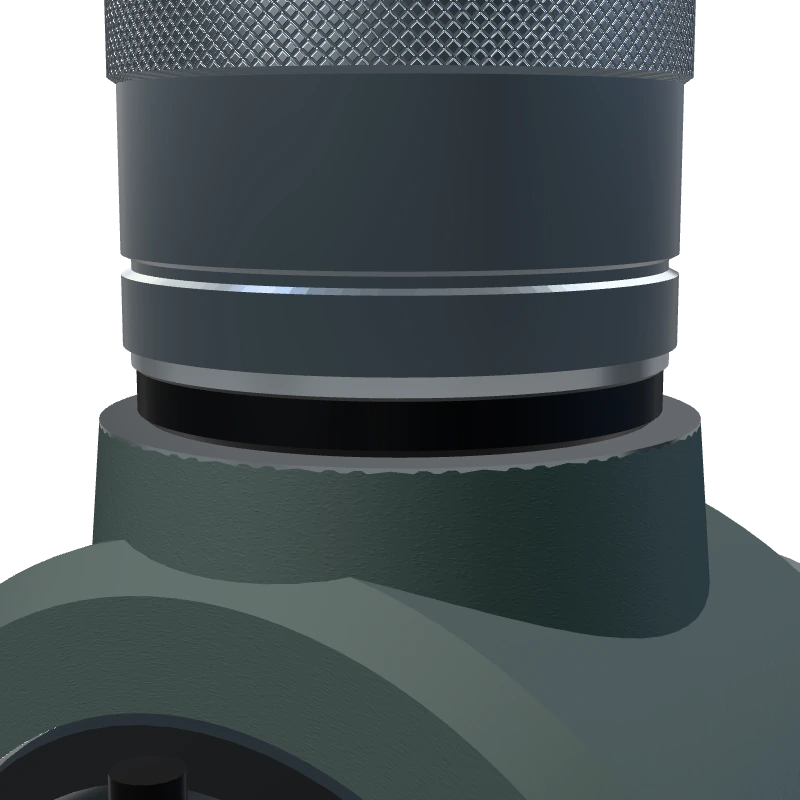
« Le SMS est arrivé un jeudi. Le lundi, on changeait le roulement de la presse 7, en deux heures. »

Usinage · Isère
2 broches sauvées en 2025

Agroalimentaire · Drôme
0 arrêt de ligne subi en 2025

Emboutissage · Loire
Alerte 5 semaines avant
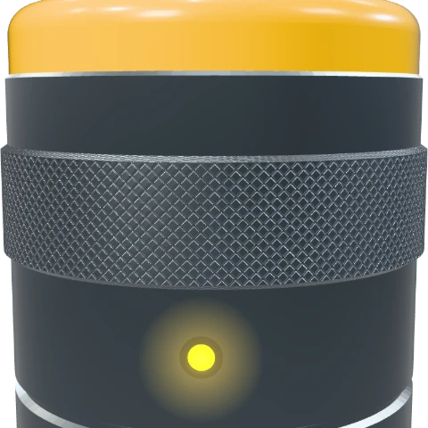
Capteurradio 868 MHz AnalysteGrenoble, données en France
AnalysteGrenoble, données en France
1 490 € HT, pilote 90 jours
Remboursé si aucune alerte utile.
Six capteurs posés sans arrêt, passerelle 4G et bilan avec un analyste. Puis 390 € HT par mois pour 10 capteurs.
Demander un diagnostic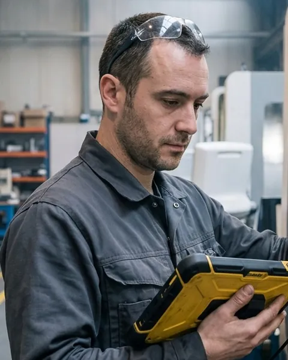
Julien FerrandAnalyste vibratoire, certifié ISO 18436-2
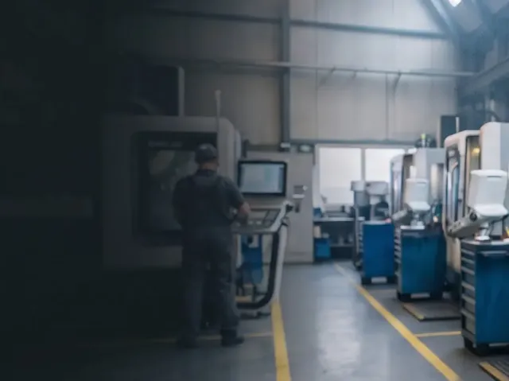
Quatre techniciens de poseIls posent vos capteurs, puis reviennent pour le bilan.
9 personnes
3 analystes
4 techniciens
2 ingénieurs

6 min de lecture
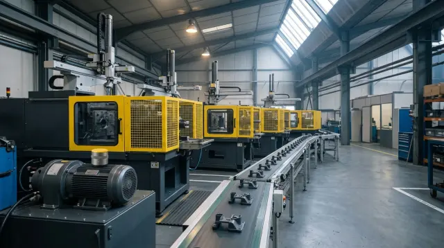
4 min de lecture

5 min de lecture
Jamais. La passerelle a sa propre SIM 4G : votre informatique n'a rien à ouvrir.
Tant mieux. Le capteur écoute la mécanique, pas l'automate.
En 2025, 41 sur 412. Un analyste relit chaque alerte avant le SMS.
Un appel gratuit, sans engagement. Il vous rappelle sous un jour ouvré.
Pendant les 30 minutes
Julien Ferrand, analyste vibratoire